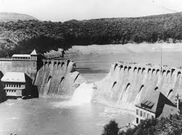

The Banqiao Dam Failure
The Night of August 8, 1975: For decades, the Banqiao Dam in China's Henan Province was nicknamed the "Iron Dam," built to survive a once in a thousand year flood. However, in August 1975, Super Typhoon Nina collided with a cold front, dropping a full year's worth of rain in just 24 hours. This was a "once in two thousand years" weather event that the infrastructure was never designed to handle.

As the water levels rose to critical heights, the sediment-clogged sluice gates failed to open fully. Communication lines were severed by the storm, leaving dam operators without instructions from the central government. At 1:00 AM on August 8, the Banqiao Dam gave way. A wall of water 20 feet high and 7 miles wide surged out at nearly 30 miles per hour. It wiped out 62 smaller dams downstream in a catastrophic chain reaction. The initial breach killed tens of thousands instantly, but the secondary "silent" tragedy of famine and disease that followed pushed the total death toll to an estimated 171,000 to 230,000 people.
From Censorship to Safety Reform: The immediate strategy following the collapse was one of Information Suppression. For nearly two decades, the Chinese government classified the details of the disaster as state secrets. It was a systematic effort to "forget" the tragedy to protect the reputation of the Great Leap Forward era engineering.
Key Facts
Date: August 8, 1975
Location: Henan Province, China
Casualties: 171,000 to 230,000 deaths (including famine and disease)
Cause: Engineering and Systemic Failure (Typhoon Nina rain causing a chain reaction of 62 dam collapses)
The Dam Safety Strategy: Once the details were finally declassified in the 2000s, the strategy shifted toward a massive national audit. The "strategy" here involved a cold, analytical look at "Type 3" (dangerous) reservoirs.
The Modernization Goal: The government launched a multi billion dollar strategy to reinforce or decommission over 30,000 aging dams. This shift in planning moved away from purely "Iron" physical barriers toward integrated flood management and early warning telecommunications that could survive a total power failure.
The Banqiao disaster is a terrifying reminder of the "Domino Effect." It teaches us that the failure of a single strategic point in a network—in this case, one massive dam—can cause an entire region to collapse. It highlights the danger of overconfidence in engineering and the catastrophic cost of choosing political silence over public safety.